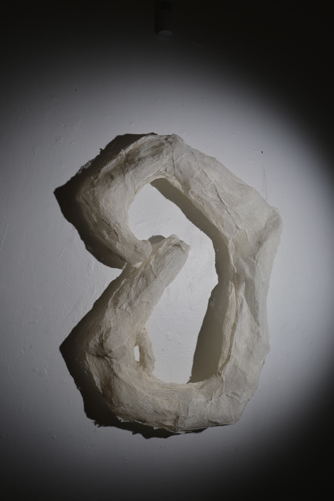
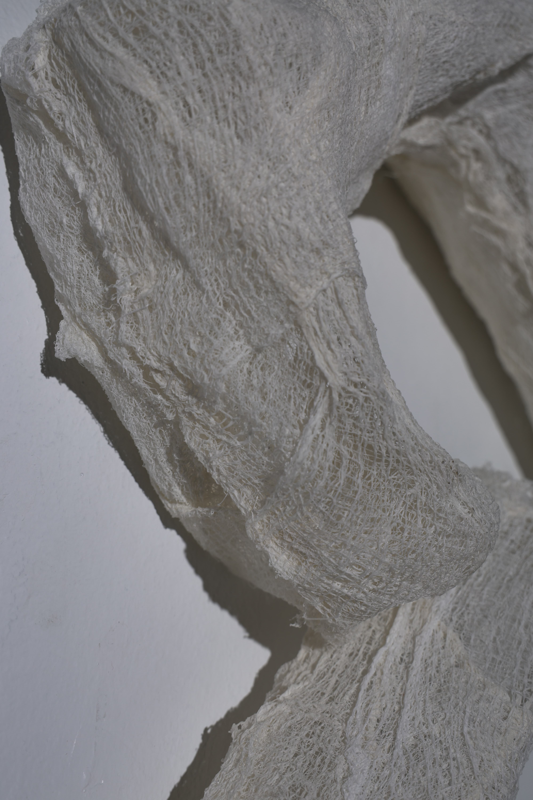

This piece appropriates a symbol of security—the carabiner, a tool synonymous with strength, safety, and reliable support—and reconstructs it entirely from medical gauze. The material, delicate and porous, is typically used to dress wounds, not carry weight. In this form, the object loses its expected function but not its symbolic gravity.
Many viewers do not immediately recognize the form as a carabiner. Its proportions are slightly off, its surface too soft, too matte. This subtle weirdness generates hesitation—a pause to question what the object is and whether it can be trusted. That uncertainty becomes part of the piece. Some only realize its identity when told, triggering a moment of recognition layered with disbelief.
This dissonance speaks to the core of my practice: the rehearsal of fragility, the breakdown of assumptions, and the quiet endurance that remains. While the carabiner no longer holds in a literal sense, its presence evokes the emotional weight we place on forms that once promised safety.
It explores the gap between what we expect and what we experience. It acknowledges how we project trust onto objects and systems, and how that trust may falter—not with violence, but with a quiet unraveling. Still, the gauze doesn't disintegrate. It holds together, barely, insistently. Not secure, but not broken either.

